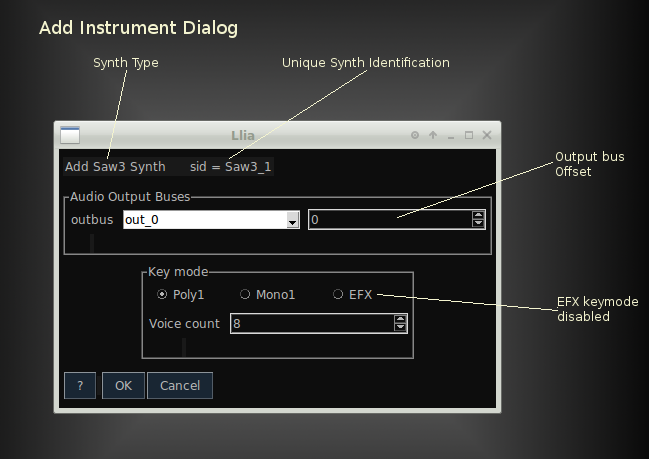

Llia
Add Synth Dialog
Adding an Instrument (Synth) Dialog
-
Outbus
Selects audio output bus.
Buses with names 'out_0', out_1, out_2, ... correspond to sound card outputs.
The default bus, out_0, is the first output of the first sound card. -
Outbus offset
The output bus offset is an index added to the SuperCollider bus number.
This value is useful for selecting a specific bus from a multi-channel bus.
Within SuperCollider there is no such thing as a true multi-channel bus.
Instead buses are numbered sequentially and bus names may skip over indexes.
All of the 'automatic' buses, out_0, out_1, out_2, etc..., are single-channel.
Selecting bus_0 with an offset of 1 is equivalent to bus_1. -
Key mode
Each synth is managed by a specific key mode which allocates voices in response to incoming events.
Initially there are three key modes:-
Poly1
- Allocates voices on the fly.
- Has up to 128 voice polyphony (subject to system resources).
- Does not require resources if no notes are playing.
- Does not maintain a 'history' between notes, features such as portamento generally do not work.
- May not be fast enough for very complex synths?
-
Mono1
- Keeps a single voice active at all times.
- Allows for monophonic trills.
- Supports portamento.
-
Efx
- Specialized keymode for effects.
- Keeps single effects synth active at all times.
- Keeps track of key count and passes 'gate' information to the effect.
- Passes keynumber, frequency and velocity of last key down to the effect.
- Is only useful for effect synths, and not regular 'instrument' synths.
Additional specialized keymodes may be added later.
-
Poly1
-
Voice count
Sets the number of voices to allocate.
Voice count is included for possible future key modes and is currently ignored.
Add Effects Dialog
The Add Synth and Add Effect dialogs are nearly
identical.
The only real difference between them is that the add effects dialog
has fields for audio input bus and is limited to the 'Efx' keymode.
Additional Bus And Buffer Parameters
If the synth has parameters for control buses are parameters,
additional fields appear for each parameter.